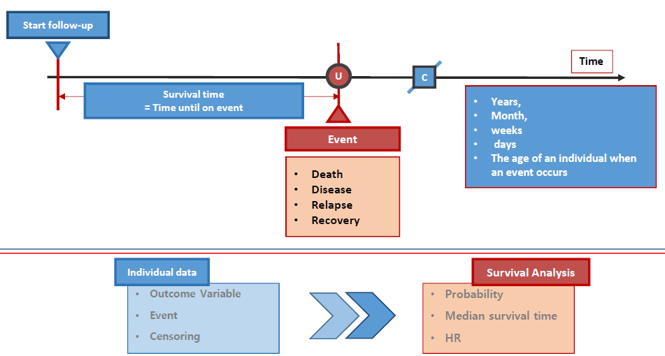
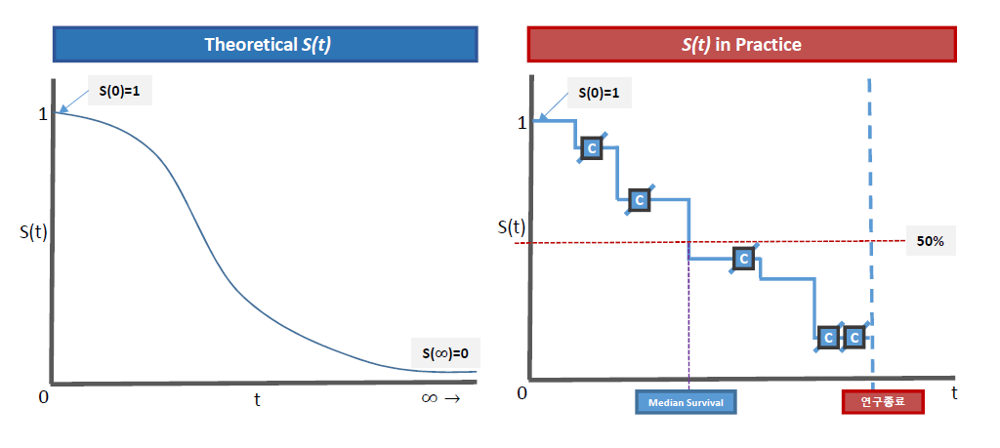
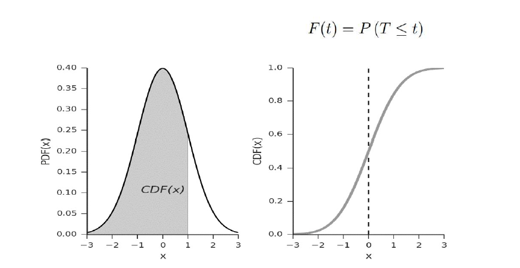
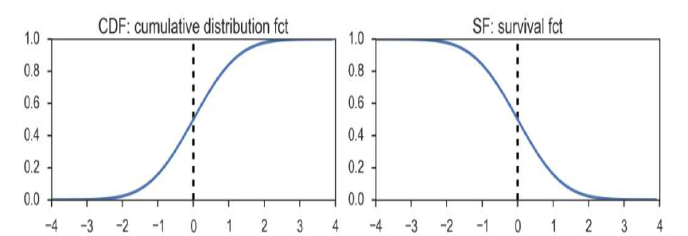

Chapter 1 Survival Analysis?
생존분석(survival analysis)은 생존시간(survival time) 자료를 분석하는 통계적 방법
넓은 의미에서 생존시간이란 어떤 정의된 시점부터 특정한 사건(event)이 관측될 때까지의 시간을 의미(time to event)
- 여기서 사건은 환자의 사망뿐 아니라 어떤 처리에 대한 반응이나 질병의 재발 등이 될수 있음. 따라서 환자가 수술시부터 사망할 때까지의 시간, 어떤 처리를 받은 후 특정 반응을 나타낼 때까지 걸린 시간, 처치 후 재발할 때까지의 시간 등이 모두 생존시간으로 정의 될 수 있음
- 보통 관심이 있는 사망이나 질병의 발생, 재발 또는 좋지 않은 경험을 사전으로 정의하는 경우가 많기 때문에 사건의 발생을 ‘실패’(failure)라 하고 생존시간을 실패시간(failure time) 이라고도 함
생존분석에는 1년 또는 3년 생존율, 환자의 절반 정도가 생존하는 시간(median time), 실험군과 대조군의 생존분포 비교, 생존에 영향을 미칠 수 있는 여러 예후인자(prognostic factor)들 중 유의한 영향을 미치는 인자 분석 등이 있음

주요 End point
- OS: Overall survival / Death
- PFS: Progression free survival / progression + death
- TTP: Time to disease progression / progression
- TTD: Time to treatment discontinuation / treatment stop
- PPs: Post progression survival / time from progression to death
- PFS2: 2nd PFS / time after pregression to 2nd progression
1.1 중도절단
- 생존시간 데이터가 다른 데이터와 구별되는 이유 중 하나는 중도절단 자료(censored data)를 포함하기 때문
- 중도절단 자료는 생존 시간에 대한 어느 정도의 정보는 가지고 있지만 정확한 생존시간을 모를 때 발생
- 예를 들어, 백혈병 환자를 대상으로 관해상태에 들어간 후 재발할 때까지 관찰하는 연구에서 연구 종료 시점까지 환자가 관해상태를 유지한다면 환자의 생존시간은 중도절단된 것
- 위의 경우, 관찰한 것보다 생존시간이 길다는 것은 알지만, 완전한 생존시간을 알 수 없음
완전한 자료와 중도절단 자료

중도절단(censoring)은 크게 세 가지 형태로 구분
제 1 형태 (Type I censoring)
- 연구자에 의해 중도절단 시간이 고정된 경우
- 예를 들어, 임상시험에서 연구종료시점을 미리 정해 놓았을 때 환자들은 각기 다른 시간에 시험에 들어오게 되므로 연구 종료시점까지 사망이 관측되지 않는 환자의 경우 중도절단이 됨
제 2 형태 (Type II censoring)
- 사전에 관측할 사망자수를 정해 놓는 경우 발생
- 예컨대 100마리의 동물 중 90마리가 사망하는 시점까지만 관측하는 경우
임의중도절단 (random censoring)
- 연구자가 제어하지 못하는 이유로 중도절단되는 경우
- 거주지 변경 등의 원인으로 추적 불가능 (loss to follow up)
- 환자의 치료거부 또는 기타 사유로 치료 중단 (drop out)
- 다른 이유로 인한 사망 (unrelated event)
- Event 없이 연구 종료
- 중도절단 발생 예시

2번 환자의 경우 유방암으로 인한 사망으로 발생하기까지 4년이 걸렸으며, 원하는 이벤트가 발생했기 때문에 중도절단이 아님
1번 환자의 경우 심근경색으로 사망하기까지 6년이 관찰되었으나, 원하는 사건인 유방암으로 인한 사망이 아니기때문에 실질적으로 유방암으로 인한 사망이 발생할때까지 완전한 시간을 알 수 없음. 따라서 중도절단 자료임
중단 시점에 따른 중도절단
- 우중도절단(right-censored)
- 연구가 종료될 때까지 이벤트가 발생하지 않았거나 중도에 탈락하여 정확한 생존기간을 알 수 없는 경우
- 대부분의 생존자료는 우중도절단에 해당함
- 좌중도절단(left-censored)
- 관찰된 생존시간보다 실제 생존시간이 짧은 경우
- 예를 들어, HIV에 노출된 후 처음으로 HIV 검사에서 양성으로 나오는 것을 사건으로하는 생존분석의 경우, 바이러스에 노출된 시간을 정확히 알지 못하는 경우
- 구간중도절단(interval-censored)
- 실제 생존시간이 어떤 구간 내에 발생하는 경우
- 예를 들어, HIV 검사를 2번 하였고 시점 t1에서는 음성으로 나왔으며, t2에서는 양성으로 나왔지만 정확한 노출시간을 알지 못하는 경우 구간 (t1, t2) 사이에서 구간중도절단 됨
1.2 생존함수

생존시간 \(T_1, T_2, \ldots, T_n\)은 서로 독립이고 동일한 분포 \(F\)를 갖는 확률변수
중도절단시간 \(C_1, C_2, \ldots, C_n\)은 서로 독립이고 동일한 분포 \(G\)를 갖는 확률변수
생존시간 \(T_1, T_2, \ldots, T_n\)을 모두 관측하지 못하는 대신
\[ X_i = min(T_i, C_i)\] \[\delta_i =I(T_i < C_i ) \]
로 정의되는 \((T_1, \delta_i), (T_2, \delta_2), \ldots, (T_n , \delta_n )\)을 관측
- 임의중도절단의 경우 일반적으로 생존시간 \(T_i\)와 중도절단시간 \(C_i\)가 서로 독립 가정

생존함수(survival function) \(S(t)\)
- 생존시간을 \(T(\ge 0)\)라 하고 \(T\)가 확률밀도함수 \(f(t)\)와 분포함수 \(F(t)\)를 가질 때,
\[S(t)=P(T>t)=1-P(T\le t)=1-F(t), \,\,\, 0<t<\infty\]
- 생존함수는 환자가 \(t\)시간 이상 생존할 확률

생존함수의 이론적 특성
생존함수는 증가하지 않음(non-increasing). 즉 \(t\)가 증가함에 따라 감소함
\(t=0\)일 때 \(S(t)=S(0)=1\). 즉, 연구가 시작되었을 때 아직 사건이 발생하지 않았으므로 생존 함수값은 1.
\(t=\infty\)일 때 \(S(t)=S(\infty)=0\). 즉, 이론적으로는 연구 기간의 제한이 없다면 결국 모든 대상자가 사망하므로 생존함수는 0.
현실적으로 여러가지 제약에 의해 모든 연구 대상자에게 사건이 발생하지 않을 수도 있기 때문에 반드시 연구 종료 시 추정된 생존함수가 0이 되지는 않음
1.3 위험함수
- 위험함수는 어떤 환자가 \(t\) 시점까지는 생존했다가 \(t\) 시점 바로 직후에 사망하게 되는 순간위험률을 의미
위험함수(hazard function) \(h(t)\)
\[h(t)=\lim_{dt \rightarrow 0} P(t<T<t+dt|T \ge t)/dt=f(t)/S(t)\]
- 위험함수의 이해를 위해
- \(P(A|B)\)는 조건부확률을 뜻하는 것으로 주어진 사건 \(B\)가 일어났다는 가정하에 \(A\)가 일어난 확률을 의미
- \(P(t<T<t+dt|T \ge t)\)는 어떤 대상이 특정한 시간 \(t\)보다 더 생존하였다고 가정할 때 그 대상이 특정한 시간으로부터 아주 짧은 시간 간격 안에 실패할 확률을 의미
- 이때, 위험함수는 조건부확률을 단위시간으로 나눈 것으로 확률에서 비율의 개념으로 바뀜
- 조건부확률은 0과 1사이의 값, 위험함수는 0부터 무한대의 값을 가짐
- 예를 들어, 조건부확률이 1/3일때 시간 간격이 1/2day라면 확률을 시간 간격으로 나눈 값은 0.67/day가 되고 시간 간격을 1/14week라면 확률을 시간 간격으로 나눈 값은 4.67/week이 됨
1.4 생존함수와 위험함수 관계
- 누적분포함수(culmulative distribution function, CDF)
\[ F(t)=P(T \le t)=1-S(t), \,\,\, 0<t<\infty \]
- 확률밀도함수(probability density function, PDF)
\[ f(t)=\frac{d}{dt}F(t)=-\frac{d}{dt}S(t) \]
- 위험함수
\[ h(t)=\frac{f(t)}{S(t)} \]
- 누적위험함수(cumulative hazard function)
\[ H(t)=\int_{0}^{t}h(u)du \]
- 생존함수와 누적위험함수
\[ \frac{d}{dt}log(S(t))=-\frac{f(t)}{S(t)}=-h(t) \]
따라서
\[ log(S(t))=-H(t) \leftarrow \rightarrow S(t)=exp(-H(t))=exp(-\int_0^t h(u) du) \]